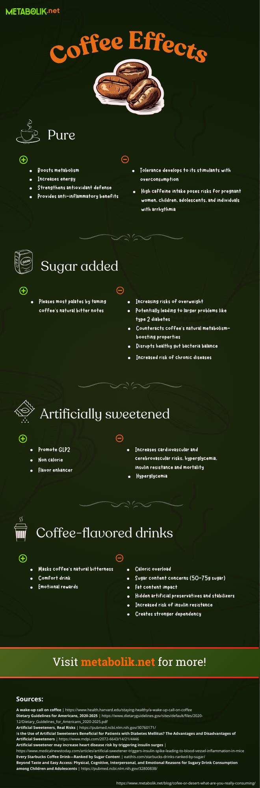

Coffee or dessert: what are you really consuming?
If you've heard about coffee's health benefits[1] and want to incorporate them into your daily routine, it's crucial to distinguish between actual coffee and coffee-flavored drinks that merely use it as an ingredient.
The Starbucks story illustrates how their coffee shop concept revolutionized American coffee culture[2]. Without question, it's been an explosive success spanning decades and crossing countries and continents!
This transformation was so impactful that it fundamentally changed how coffee is consumed. Today's younger generation might find it challenging to drink plain black coffee without additions like sugar, sweeteners, milk, whipped cream, and other ingredients.
Even those who were young when Starbucks was expanding across the United States probably don't think of strong black coffee first. For many, coffee's bitter notes are more welcome in desserts than in their cup.
The numbers tell the story: a whopping 82% of people are opting for coffee drinks mixed with other ingredients and flavors instead of traditional black coffee[3].
This raises an important question: are you drinking coffee or coffee-flavored desserts? To understand why this distinction matters, let's look at what a Harvard study has to say.
The anatomy of a Grande Caffè Mocha
The study[4] analyzed the contents of Starbucks' Caffè Mocha - though this drink recipe is popular beyond their stores - and the results are well-illustrated in the following image.
Source: Harvard Health Publishing
We see a combination of ingredients that practically bury the coffee under milk (12 oz.) and whipped cream. Notably, the coffee is mixed with syrup containing 32% of the recommended daily sugar intake, which rises to 70% when considering all sugars combined!
This isn't meant to criticize the product or its consumers. Rather, we're encouraging reflection on what it means to truly harness coffee's benefits for those seeking to boost metabolism or adopt healthier habits.
When looking for these benefits in a Caffè Mocha, while substances like caffeine and chlorogenic acid are absorbed, you're also consuming 35 grams of sugar and 19 grams of fat, totaling approximately 400 calories - components that significantly diminish coffee's positive effects.
The benefits of pure coffee
Coffee-based desserts prevent you from fully enjoying coffee's many health benefits. These include improved metabolic efficiency[5], cardiovascular health[6], and energy levels[7].
Discover more details in our free eBook "Heroes That Seem Like Villains For Your Health." Download it now at no cost!
If you're drinking coffee for health benefits, it's important to avoid adding sugars or sweeteners, and here's why.
According to the Dietary Guidelines for Americans[8], moderate caffeine consumption for adults is 400 mg (3-5 cups daily). The same amount of sweetened coffee could exceed recommended daily sugar intake for a healthy diet, increasing risks of overweight and potentially leading to larger problems like type 2 diabetes.
Why artificial sweeteners aren't the answer
Although calorie-free and highly sweet in small amounts, studies link artificial sweeteners to increased cardiovascular and cerebrovascular risks, hyperglycemia, and mortality[9].
A recent rodent study showed that consuming aspartame (equivalent to three diet sodas) significantly increases insulin resistance[10].
This occurs because the body has various receptors guiding insulin production when sugar is consumed. However, aspartame is 200 times sweeter than sugar[11], triggering the body to produce far more insulin than necessary.
Long-term, this issue increases type 2 diabetes risk due to insulin resistance that's essentially "encouraged" by aspartame consumption.
Natural additives that enhance coffee's power
If you're managing or trying to reduce your weight, enriching black coffee with natural substances is a safe and interesting approach.
Our eBook "Heroes That Seem Like Villains For Your Health" provides a complete list of these natural elements. Download it
to explore the details at your leisure.In summary, some key substances include:
green tea extract (camellia sinensis): fat-burning sidekick. Packed with catechins, it turns up you body's internal thermostat,helping transform stored fat into energy.
chromium: your metabolism's traffic controller. This trace mineral helps regulate blood sugar and directs carbs, fats, and proteins to where they can be best used for energy.
ginger: its anti-inflammatory compounds(gingerol and shogaol) fight inflammation while boosting blood flow, helping caffeine work more effectively.
l-theanine: found in tea leaves and certain mushrooms, this amino acid keeps you alert without jitters - similar to theobromine - creating perfect harmony with caffeine.
These and other substances that enhance coffee's metabolic effects, when not available in supermarkets, can be found in natural supplements. If you're interested in learning more, watch this video - noting that metabolik.net doesn't sell products or handle product support or distribution.
Now that you understand how to maximize coffee's benefits and why to avoid desserts disguised as coffee - or at least consume them less frequently - how about trying a practical and delicious recipe? Give our coffee banana smoothie a try!
References
[1] The complexity of coffee and its impact on metabolism | PubMed
[2] The Starbucks Story: Changing Coffee Culture | Marketing Society
[3] Coffee Statistics: Consumption, Preferences, & Spending | Drive Research
[4] A wake-up call on coffee | Harvard Health Publishing
[6] Effects of Habitual Coffee Consumption on Cardiometabolic Disease, Cardiovascular Health, and All-Cause Mortality | ScienceDirect
[7] Caffeine and exercise: metabolism, endurance and performance | Springer Nature
[8] Make Every Bite Count With the Dietary Guidelines | Dietary Guidelines for Americans 2020-2025
[10] [11] Artificial sweetener may increase heart disease risk by triggering insulin surges | Medical News Today